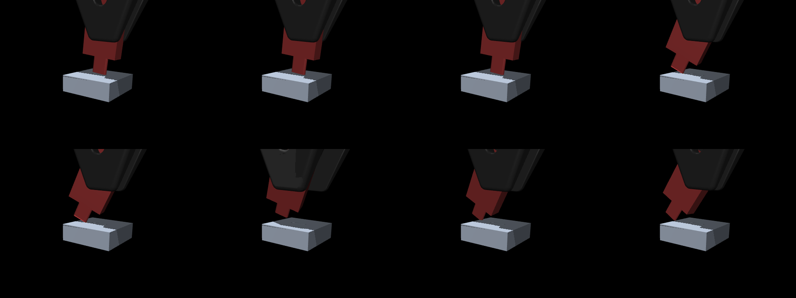
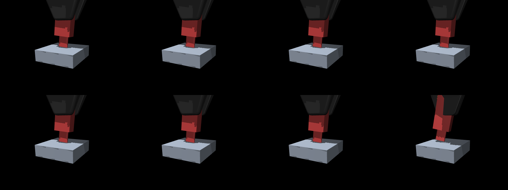

<title>USB-C Grasp Failure</title>
<meta name="claude:viewport-fit-sides" content="cover">
<meta name="description" content="Why the USB-C policy stopped at 77% on the first curriculum stage: the simulated grasp lost contact points and the drive slipped out at reset. Written in ASD-STE100 Simplified Technical English.">
<link rel="preconnect" href="https://fonts.googleapis.com">
<link rel="stylesheet" href="https://fonts.googleapis.com/css2?family=Inter:wght@300;400;500;600;700&family=JetBrains+Mono:wght@400;500&display=swap">
<link rel="stylesheet" href="static/css/style.css">
<script type="module" src="static/js/figures/index.js"></script>

<main>
  <header class="hero">
    <div class="badge">Failure analysis · 20 October 2026 · Phase E, USB-C on the YAM arm</div>
    <h1>USB-C Grasp Failure:<br><span class="sub">Why the policy stopped at 77% on the first stage</span></h1>
    <p class="authors">Prepared by Yash Chitambar</p>
    <p class="affil">Part of the reproduction of Bronars et al., <i>Blind Precise Assembly</i> (arXiv:2610.23849)</p>
    <nav class="links">
      <a class="btn" href="https://claude.ai/artifact/URFVLyikuVeyx4ug6XJBby">Main results report</a>
    </nav>
  </header>

  <figure class="teaser">
    <video autoplay muted loop playsinline poster="static/images/slip_vs_spheres_poster.jpg">
      <source src="static/videos/slip_vs_spheres.mp4" type="video/mp4">
    </video>
    <figcaption><b>The drive falls out of the simulated grasp, with no action from the policy.</b> Top row: the gripper pads as boxes, as in training. Bottom row: the same two start states with each pad as a grid of 4 × 4 small spheres. The robot does not move in any panel (zero action). The video shows the first 0.8 s at ¼ of real time.</figcaption>
  </figure>

  <section id="summary">
    <h2>Summary</h2>
    <p class="lede">The USB-C policy did not stop because the task is too hard. It stopped because the simulated grasp failed. In 11 to 14% of resets, the drive fell out of the gripper in the first 0.1 s. No policy can correct this, so the training success could not pass approximately 80%.</p>
    <ul class="facts">
      <li><b>The failures are slips.</b> 87% of the failed episodes end when the drive slips from the grasp. Only 7 of 2,048 episodes fail because the policy does not find the port.</li>
      <li><b>The slip occurs with zero action.</b> If the robot does not move, 12.5% of the drives slip, a median of 0.08 s after the reset.</li>
      <li><b>The cause is missing contact points.</b> When the drive is turned in the gripper (in-hand tilt), the pad and the drive face overlap only partly. Then the contact calculation gives an edge (2 points) or no contact, not the full face (8 points). With 8 points, 1.3% of the worlds slip. With fewer points, 75% slip.</li>
      <li><b>Sphere pads correct the grasp.</b> With a grid of 4 × 4 spheres on each pad, no drive slips with zero action (0 of 2,048). The same trained policy then seats 98.3% of the drives on stage 1, against 80.9% before.</li>
      <li><b>A new training run with sphere pads is in the queue.</b></li>
    </ul>
  </section>

  <section id="plateau">
    <h2>The policy stopped at the first curriculum stage</h2>
    <p class="claim">After 160 million steps, the training success was 78%. The curriculum needs 90% to go to stage 2.</p>
    <p>The curriculum has five stages. Each stage makes the clearance tighter and the start offset larger. Stage 1 has a clearance of 0.3 mm and a median start offset of 0.5 mm. The final stage has a clearance of 0.02 to 0.1 mm and a median offset of 3 mm. The run stayed at stage 1 for all 160 million steps. We stopped it early.</p>
    <figure class="viz" data-fig="training">
      <div class="viz-tag">Interactive · hover to read the curve</div>
      <div class="viz-mount"></div>
      <figcaption><b>Training curve of E-usbc-proprio-curr-s0 (stochastic actions).</b> The blue line is the share of episodes that seat the drive. The green line is the share where the drive enters the port. The gap between the lines is small: if the drive enters, it usually seats. The dotted line is 90%, the level that the curriculum needs.</figcaption>
    </figure>
  </section>

  <section id="outcome">
    <h2>The failures are slips, not search failures</h2>
    <p class="claim">The trained policy seats 80.9% of the drives on stage 1. 16.7% of the episodes end because the drive slips from the grasp.</p>
    <p>We evaluated the final checkpoint on 2,048 matched starts at the stage-1 settings, with deterministic actions. The failed episodes end early: a median of 0.18 s after the start. The drive turns a median of 26° in the hand. The start offset has almost no effect: the success is 78 to 83% in each quarter of the start distances.</p>
    <figure class="viz" data-fig="hbars" data-src="outcome.json">
      <div class="viz-tag">Interactive · hover a bar</div>
      <div class="viz-mount"></div>
      <figcaption><b>Outcome of each episode (n = 2,048).</b> The whiskers show the 95% Wilson interval. "Slipped from the grasp" means that the grasp point on the drive moved more than 6 mm relative to the gripper.</figcaption>
    </figure>
  </section>

  <section id="zero">
    <h2>The drive slips at reset, with zero action</h2>
    <p class="claim">If the robot does not move, 12.5% of the drives slip. The median slip occurs 0.08 s (4 control steps) after the reset.</p>
    <p>We gave the same 2,048 start states to a policy that always sends zero action. The drive slipped in 257 episodes. In 73% of the starts where the zero action slips, the trained policy also slips. In the other starts, the trained policy slips only in 8.7%. Thus, most slips come from the start state, not from the policy.</p>
    <div class="gallery wide-block">
      <figure>
        
        <figcaption><b>Start 16, zero action, box pads.</b> Eight frames over 0.12 s. The drive turns about the pads, and the plug moves to the side.</figcaption>
      </figure>
      <figure>
        
        <figcaption><b>Start 45, zero action, box pads.</b> Eight frames over 0.04 s. The drive slides along the pads in the last frame.</figcaption>
      </figure>
    </div>
  </section>

  <section id="sweep">
    <h2>The grasp rotations cause the slips</h2>
    <p class="claim">If the drive is not turned in the hand, the trained policy seats 94.4% of the drives. If the gripper and the fixture also have no tilt, it seats 98.2%.</p>
    <p>We changed one setting at a time and kept the other settings and the 2,048 start states. The start offset and the episode length have no effect. The rotations of the drive relative to the pads have a large effect. Softer pads make the slip much worse.</p>
    <figure class="viz" data-fig="hbars" data-src="sweep.json">
      <div class="viz-tag">Interactive · hover a bar for the slip rate</div>
      <div class="viz-mount"></div>
      <figcaption><b>Success of the same trained policy with one change at a time (n = 2,048 for each bar).</b> In-hand tilt turns the drive in the plane of the pads by up to ±5°. Gripper rotation (±5°) and fixture tilt (±2°) turn the gripper relative to the port. Hover a bar to see the slip rate.</figcaption>
    </figure>
  </section>

  <section id="solver">
    <h2>The contact solver is not the cause</h2>
    <p class="claim">More solver iterations do not change the slip rate (12.2% against 12.5%).</p>
    <p>The training log showed many line-search iteration limits in the contact solver. Thus, we first suspected the solver. More iterations do not help. An elliptic friction cone with impratio 10 helps only a little (10.8%). A pyramidal cone with impratio 10 makes the slip four times worse (43.7%).</p>
    <figure class="viz" data-fig="hbars" data-src="zero.json">
      <div class="viz-tag">Interactive · hover a bar</div>
      <div class="viz-mount"></div>
      <figcaption><b>Slip rate with zero action for each physics setting (n = 2,048 for each bar).</b> The last bar uses sphere pads (next section). The solver settings are MuJoCo options: iterations 100 and line-search iterations 50 against 50 and 20 in training.</figcaption>
    </figure>
  </section>

  <section id="contacts">
    <h2>Too few contact points cause the slip</h2>
    <p class="claim">With the full 8 contact points between the pads and the drive, 1.3% of the worlds slip. With fewer points, 75% slip.</p>
    <p>A good grasp has 4 contact points on each pad: the corners of the area where the pad face and the drive face touch. We counted the contact points after the first control step in all 2,048 worlds. 277 worlds had fewer than 8 points, and most of them slipped. With an edge of 2 points, the drive can turn about that edge. Thus, the drive falls out of the grasp.</p>
    <figure class="viz" data-fig="hbars" data-src="contacts.json">
      <div class="viz-tag">Interactive · hover a bar</div>
      <div class="viz-mount"></div>
      <figcaption><b>Slip rate against the number of pad–drive contact points after the first step (zero action, all 2,048 worlds, MuJoCo Warp).</b></figcaption>
    </figure>
    <p>The missing points occur when the two faces overlap only partly. The pad face is 14.4 mm wide. The in-hand tilt turns the drive face up to 5° relative to the pad face. A wide drive body (22 mm or more) covers the full pad face at all angles, and its contact is always correct. A narrow body overlaps the pad only partly. In this case, MuJoCo's convex multi-contact calculation can give only an edge or no contact. A real gripper gives a contact area in both cases.</p>
    <figure class="viz" data-fig="hbars" data-src="width.json">
      <div class="viz-tag">Interactive · hover a bar</div>
      <div class="viz-mount"></div>
      <figcaption><b>Share of worlds with the full 8 contact points, for five groups of drive body width (approximately 410 worlds for each bar).</b> Body thickness, length and mass have no effect (not shown).</figcaption>
    </figure>
    <p class="note">The same contact problem also occurs on the CPU version of MuJoCo, but in different worlds. When we copied the exact GPU start states to the CPU, the CPU also gave 0 to 4 contact points in some worlds. Thus, this is a property of the contact calculation for this geometry, not only of MuJoCo Warp.</p>
  </section>

  <section id="fix">
    <h2>Sphere pads correct the grasp</h2>
    <p class="claim">With 4 × 4 spheres on each pad, no drive slips with zero action. The same trained policy seats 98.3% of the drives on stage 1.</p>
    <p>We keep each pad box for the picture, but it does not collide. Its contact surface is a grid of 16 small spheres (radius 1.2 mm) with their surfaces exactly on the inner pad face. Each sphere gives one contact point with the drive, and this does not depend on how the faces overlap. The spheres have the same friction and contact settings as the pad.</p>
    <div class="tbl">
      <table>
        <thead><tr><th>Test (2,048 matched starts, stage 1)</th><th class="n">Box pads</th><th class="n">Sphere pads, 4 × 4</th></tr></thead>
        <tbody>
          <tr><td>Zero action: drives that slip</td><td class="n">12.5%</td><td class="n">0.0%</td></tr>
          <tr><td>Zero action: median pad contact points after the first step</td><td class="n">8 (fewer in 14% of worlds)</td><td class="n">31</td></tr>
          <tr><td>Trained policy (no new training): success</td><td class="n">80.9%</td><td class="n">98.3%</td></tr>
          <tr><td>Trained policy: drives that slip</td><td class="n">16.7%</td><td class="n">0.1%</td></tr>
        </tbody>
        <caption>The policy was trained with box pads. On the final stage (clearance 0.02 to 0.1 mm), it seats only 2.0% with sphere pads, because it never trained on that stage.</caption>
      </table>
    </div>
    <p class="note">A grid of 3 × 3 spheres does not work: it gives no contact at all, and every drive falls. A possible cause is that the middle spheres are exactly on the plane of symmetry of the drive. The 4 × 4 grid has no sphere on that plane.</p>
  </section>

  <section id="next">
    <h2>Next steps</h2>
    <ul class="facts">
      <li><b>Train again with sphere pads.</b> The run E-usbc-proprio-currsph-s0 is in the queue after the gear run. It uses the same curriculum with <code>pad_spheres: 4</code> (configuration <code>phase_e_usbc_spheres.json</code>).</li>
      <li><b>Check the peg tasks.</b> The peg runs used box pads. The pegs are heavy and wide, and their training success is 99.9%. But the peg can also turn in the grasp, so a sphere-pad check on the peg tasks is useful.</li>
      <li><b>Find why the CPU replay drifts.</b> In the CPU copies of the GPU states, the drive moves 1 to 2 mm in the grasp, also with box pads. On the GPU, it moves 0.01 mm. This does not change the result above, because we train on the GPU.</li>
      <li><b>Possible upstream report.</b> The partial-overlap contact case can be a small test for the MuJoCo developers: one box pad, one rotated box-shaped mesh, and a count of the contact points.</li>
    </ul>
    <div class="tbl">
      <table>
        <thead><tr><th>File</th><th>Content</th></tr></thead>
        <tbody>
          <tr><td><code>results/E/fail/stage1_*.parquet</code></td><td>One row per episode for each evaluation on this page</td></tr>
          <tr><td><code>results/E/fail/slip_gpu_cpu*.parquet</code></td><td>Contact counts, slip and CPU replay for each world</td></tr>
          <tr><td><code>blind_insertion/checks/e_slip_gpu_cpu.py</code></td><td>GPU zero-action test, contact count and CPU replay</td></tr>
          <tr><td><code>scripts/usbc_diag.sh</code></td><td>One-change-at-a-time evaluation of a checkpoint</td></tr>
          <tr><td><code>blind_insertion/assets/builder.py</code> (<code>sphere_pads</code>)</td><td>The sphere-pad grasp model (option <code>pad_spheres</code>)</td></tr>
        </tbody>
      </table>
    </div>
  </section>

  <footer>
    This report uses ASD-STE100 Simplified Technical English. All numbers come from simulation (MuJoCo Warp 3.12 on one RTX 3090 Ti).
  </footer>
</main>
